環島3
第二天冒雨騎完一連串的山路（牡丹到壽峠，金崙到太麻里），已體力透支，不過聽說我們的環島之行已把最難的路段騎完了，且這天的天氣不差，因此心想從今天開始，應該可以輕鬆騎了吧﹗？
今天是預計從台東知本沿台九線，經縣道193到花蓮瑞穗溫泉。
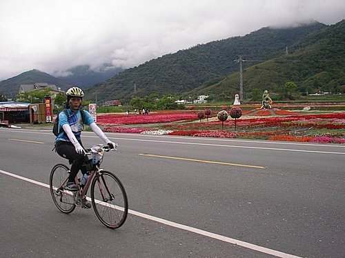
出發前在統茂飯店前與大陸客愉快地合影後，早上八點多一點，即帶著愉快的心情出發。果然，從知本出發後沿台九線騎就一路平坦，但也因此有幾位「快腳」就衝過頭了，我們到初鹿喝牛奶休息時，幾位「快腳」才陸續會合。
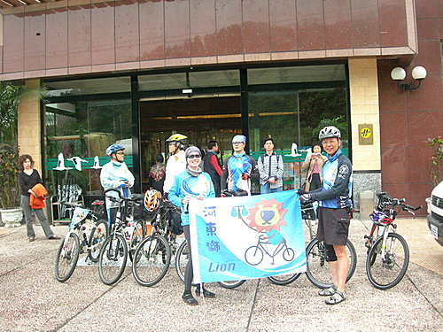
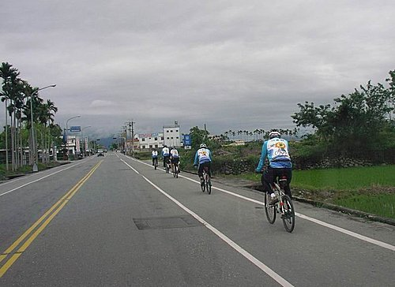
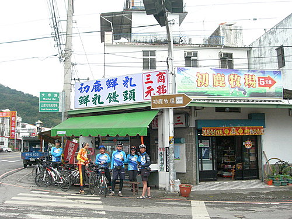
只是再出發時，就發現往關山、池上方向的台九線，也並非一路平坦，而是起起伏伏，此時就邊騎邊抱怨造路的工程單位，為什麼不把路舖平坦？
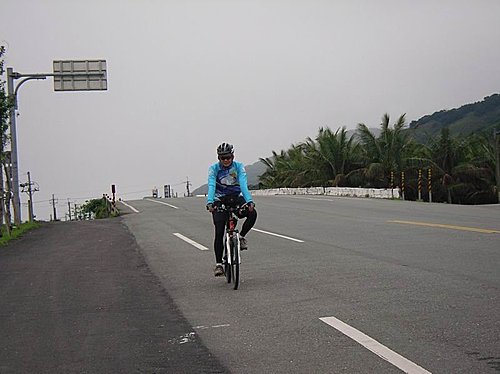
經過一陣起伏道路後，我們在脫線牧場稍做休息後再出發，往關山、池上。沿途盡是夾在青綠的海岸山脈與中央山脈間的稻田，雖然道路起伏，要趕路而騎得有些辛苦，但兩旁的平靜美景，仍能讓人暫忘腳下的痛苦。
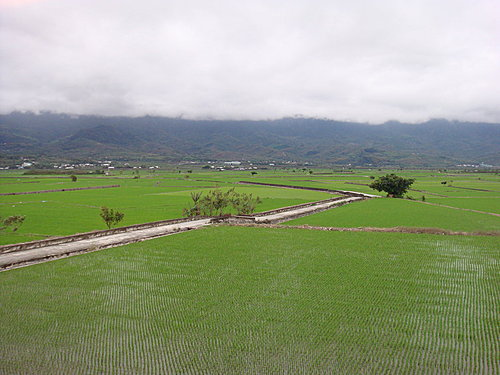
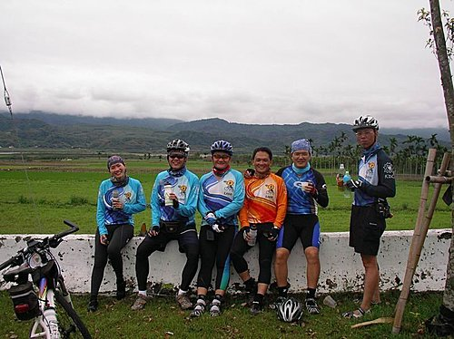
近池上時，我們在「花海」休息了一下，進「花海」參觀了一下。
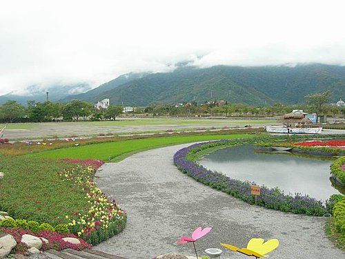
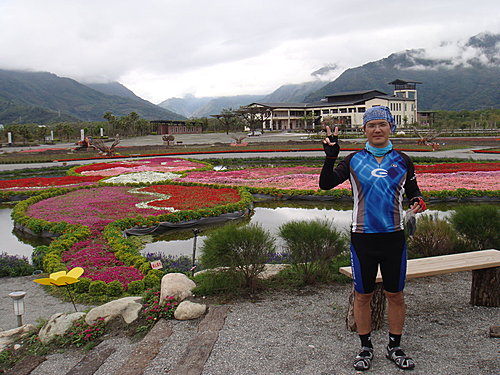
中午到達池上車站前的「全美池上便當」午餐及小憩。
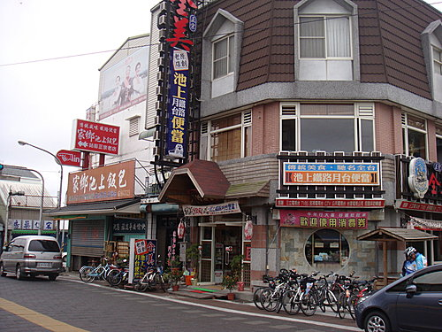
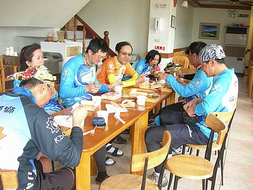
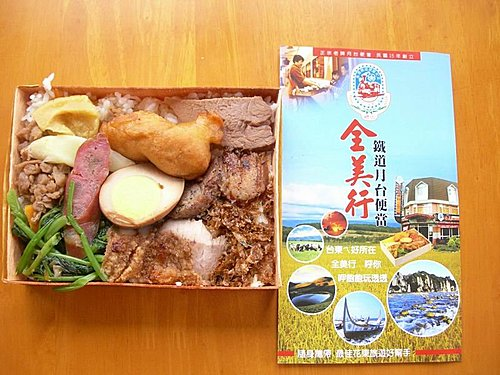
午休後大家要趕路到瑞穗，從池上走台九線，到接縣道193處，還有約27Km，此段騎的人應該都要趕路吧﹗？風景應該也不美吧﹗？就算美，騎的人應該也沒時間欣賞吧﹗？（因為今天要騎130km才能到達，途中又多起伏，所以騎車時間會拉長，因此我當先遣部隊之一，少騎了這一段，先上補給車到達縣道193起點後才接續騎，以期早點到達住宿地「安排」食宿）
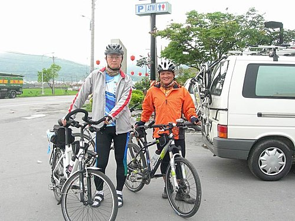
線道193風景真美，但有兩個缺點：一、蚊子多；二、上坡多。騎的時候得把自己的臉包好，否則晚餐就吃不下了。
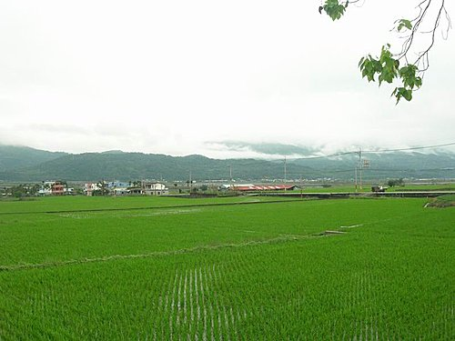
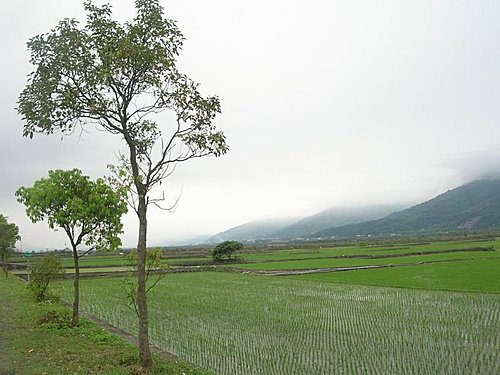
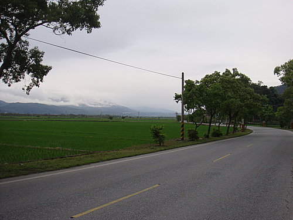
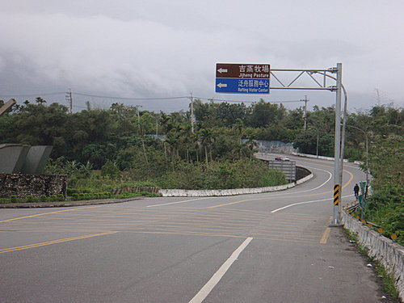
縣道193風景雖美，但起起伏伏間騎車，還是挺累的，好不容易到到瑞穗火車站，路標標示到瑞穗溫泉區還有3km，心想應該可以慢慢悠閒的騎車了﹗
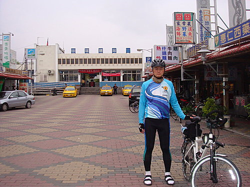
但沒想到從火車站到達瑞穗溫泉區的入口，還是一路上坡，用力地踩到了入口處，而我們「吉祥溫泉旅館」還要再騎2km。
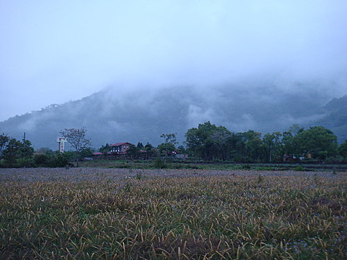
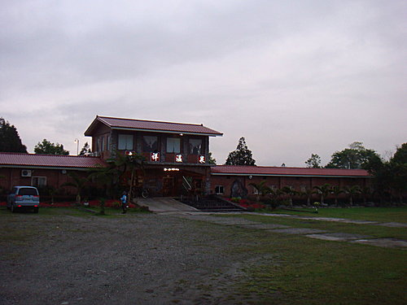
不過，總算我們還是在天黑下雨前騎到了目的地，然後可以悠閒地坐在旅館門口，等著「愛騎車」的人們拖著疲累的身軀騎進來，而「愛騎車」是要付出代價的，因為上天會對「愛騎車」的人給予考驗：雨中騎車﹗看下面這張照片：冒雨趕路到達的「愛騎車」一族﹗很美的﹗
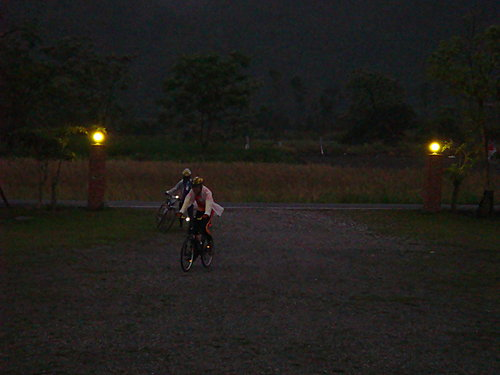
晚餐在旅館內吃原住民風味餐。
我自己是好不容易結束了這一天，其他夥伴我想應該騎得很愉快吧﹗？
我自己從今天起就有了一個覺悟：環島的任何一段，都沒有想像中容易、輕鬆，也許用十五天環島才有輕鬆的可能。
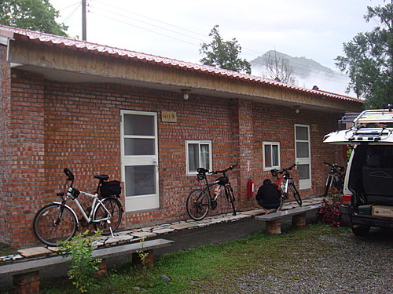
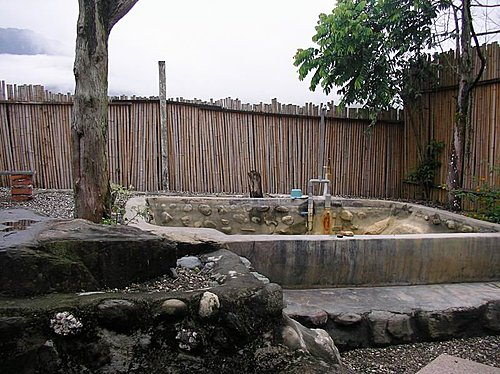
拜請您參加文建會『騎小摺瘋台灣．一起騎福之旅』活動！
拜託您上傳與愛車（不限單車類型）的旅行景點合照，每篇投稿景點過審後可立即獲得 60 點基金（可於文化旅遊網兌獎）外，還有機會再拿到捷安特CHIRON DS1新車（市價48000元）、RICOH相機、LAVOD單車MP3、單車排汗衫…等獎品。
活動網址：http://tour.cca.gov.tw/frontsite/2009events/bike/index.jsp
【PS#1 每人可在網站上傳的私房景點數量不限，但若為活動參賽作品，請務必於活動網頁中上傳哦】
【PS#2 活動是以「景點」做為評選目標，若您一次踩過好幾個景點，千萬要拆開來投稿，這樣才能痛快賺點數與票數哦】
【PS#3 景點照跟單車合照要不同張哦】
在此跟您拜託了~~~（如有可能，也請您向其他車友宣傳此活動，給您磕頭拜謝了）
【順投邀請】
----------------------------------------------------------------------------
若您的單車旅遊照片中有符合「百年文化之旅．寫真連線獎10萬」活動中的主題；誠邀您同時上傳相關照片至此活動：
http://tour.cca.gov.tw/frontsite/event100/event_index.jsp （11/30就截止了）
----------------------------------------------------------------------------
1213學長， 那瓶蠻牛果真「有夠力」，您先是在東石的「長上坡」取得衝刺王後，又能在隊友尚在環島後的復原之際，以第一名的速度完成圖文並茂的部落格遊記。就如同山哥所說的，下次環島補給，就不補給寶礦力，就直接補給蠻牛即可。那我猜下次環島說不定一星期即可完成！ 小超